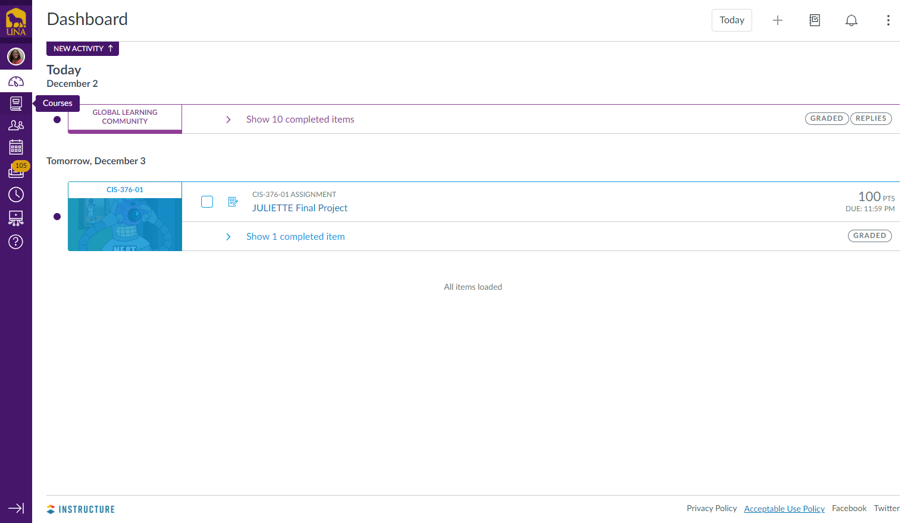

I will be suggesting changes to a minor flaw in an application most UNA students and faculty use daily - Canvas by Instructure.
Although I and lots of other students have made use of this application for a few years now, one particular feature could be designed to be more accessible.
The courses tab, is arguably the most used icon on the Canvas navigation bar. I believe the location of the courses tab should be given better placement on the main page.
This is a general representation of the Canvas dashboard page. The courses tab is located on the left alongside other icons.

When the courses tab is selected, it takes a few seconds to pop up and tends to get confusing when courses are under the same subject name.
This design features a sub-navigation bar to one's courses under the courses tab which I believe to be slow and confusing.
I believe there should be an addition to the top navigation bar with the classes listed out visibly in separate links.
This way, the classes are present on whichever page you go to on Canvas.